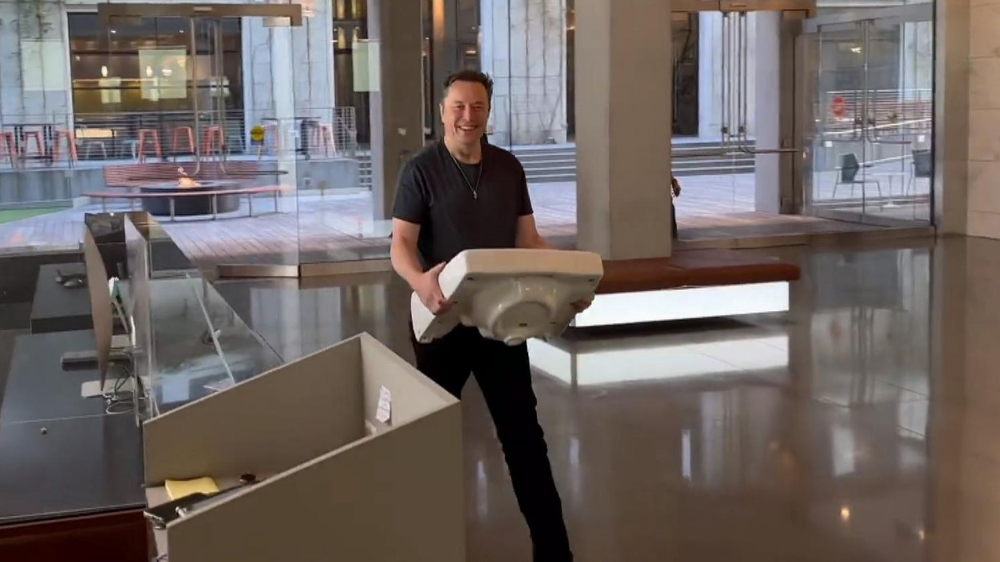
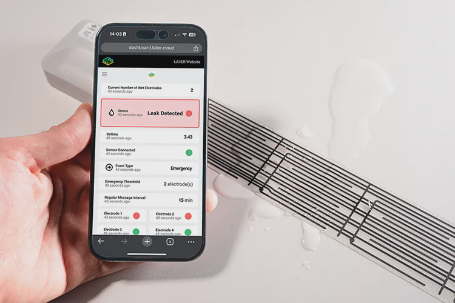
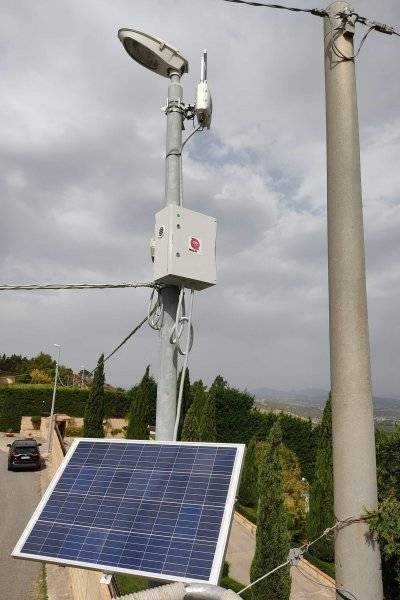
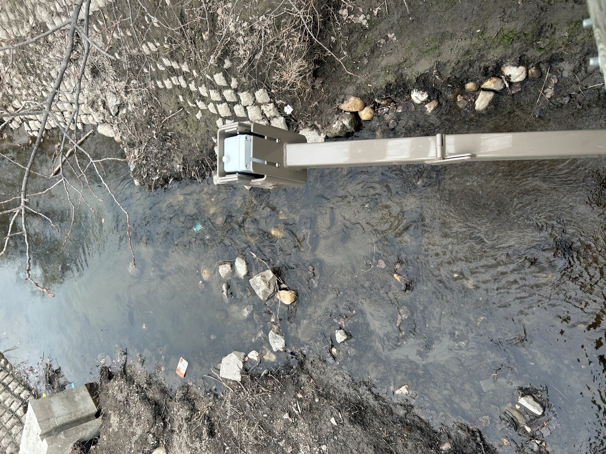
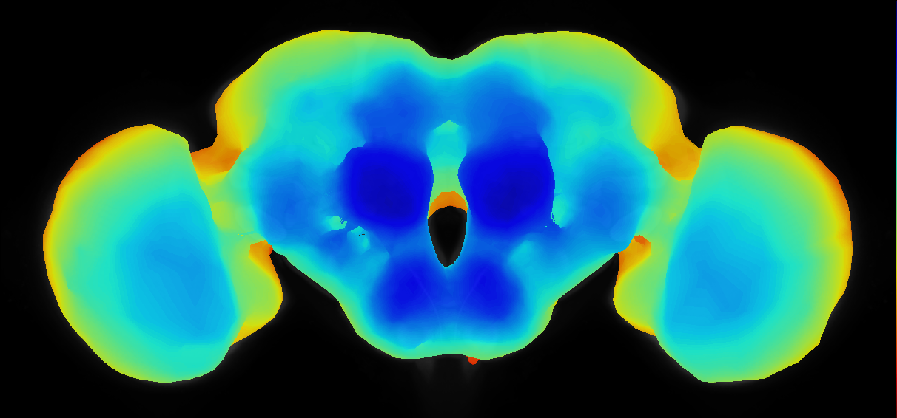

Macau
Databases, early internet and banks of dial-up modems
A masterclass in connection
How an idea becomes a network.
How a network becomes a community.
Move your pointer. Make a ripple.
A career spent making technology useful.
Databases, early internet and banks of dial-up modems
Connected hardware, MicroPython and rapid prototyping
LoRaWAN, customer deployments and Helium
Maneki Net in Portugal; transaction infrastructure at Notabene
Computers since age six · First visit to China in 1988 · IoT since 2013
A useful footnote: firmware I maintain still runs on approximately 30,000 active RAK hotspots.
2007–2008 · An engineering question
While much of wireless innovation chased higher data rates, two engineers explored a different problem:Long range · Low power · A different trade-off
How do you communicate much farther, using very little power?A different question creates a different design space.
Discovery before certainty
At first: scepticism.
After the demonstration: belief.
Show what it can do.
Discover what it is for.
Cycleo · Semtech acquisition in 2012
Sensors and modules people could actually put into products
Affordable infrastructure for different sites and deployment scales
A way to receive messages and deliver them to applications
A connection between a measurement and a decision somebody cares about
Partners able to build businesses and support real deployments
The adoption test: can every part of the chain succeed?
Open enough to build
An ecosystem can be broader than one company’s product line.
LoRa
The radio modulation: proprietary technology.
LoRaWAN
An openly published specification, developed through an industry alliance.
Bring your own devices. Choose your gateways. Run your own network. Build your own application.
Amsterdam · The Things Network
No polished platform. No traditional operator deciding where the experiment could happen.
People put gateways on rooftops and made coverage available to one another.
A working radio became shared infrastructure.
A community made it useful.
Why people build networks
“Let’s build shared infrastructure.”
Open access · experimentation · contribution“Let’s reward people for deploying coverage.”
Incentives · measurable participation · shared infrastructure“Let’s keep messages moving without the usual infrastructure.”
Independence · resilience · maker culture“Let’s build a community-operated mesh.”
Repeaters · local autonomy · mutual reachCuriosity. Independence. Resilience. Belonging. The satisfaction of making something useful.
Coverage enables growth; people create it
DISCOVER → JOIN → CONTRIBUTE → SEE THE VALUE → INVITE OTHERS
Radio coverage is invisible. Participation needs to be visible.
Daodejing · Chapter 81: the value of giving rather than hoarding (paraphrase).

Sometimes progress means retiring something that once worked.
Change can break things. Refusing to change can break the future.
Why is it like this?
THEN ASKWhat problem did it originally solve?
AND THEN ASKWhat becomes possible if we change it?
Connectivity is not the outcome
Detect water early enough for someone to act before damage spreads.
Use meter and pressure data to spot anomalies and reduce losses across a distribution system.
Turn location and behaviour data into better decisions about animals, pasture and time.
The question is not “Can it transmit?”
It is “What can somebody do now?”



Calgary · A deployment is the beginning of the relationship
What is the customer actually trying to achieve?
What is happening in the real environment?
What could we improve, simplify or build next?
Good support fixes today’s problem.
Great support discovers tomorrow’s opportunity.
A familiar rendering of the idea in the Daodejing, Chapter 17
A good product does not need to be the hero.
It gives somebody else the confidence and the tools to build something of their own.The best proof of a product is what other people make with it.
Somewhere beyond this room
Across Portugal, people have placed radios and repeaters where they live, work and travel.
Some use RAK hardware. Others use different devices. Each installation is a small decision to make communication possible for somebody else.
One message. Public mesh. Real people.
Send one message. Then listen.
A stranger can answer because other strangers chose to keep the network alive.
PUBLIC CHANNEL Anyone on the mesh may read these messages. This is not a private conversation.
Ready for a WebBluetooth-enabled browser.
Only actual public-channel messages appear here.
Someone made this possible
Behind one small message:

Act V · The next builder
A radio became a module.
Modules became devices.
Devices found gateways.
Gateways became networks.
Networks became platforms for other people’s ideas.
What will somebody build with what we make possible today?
The Tao of LoRaWAN